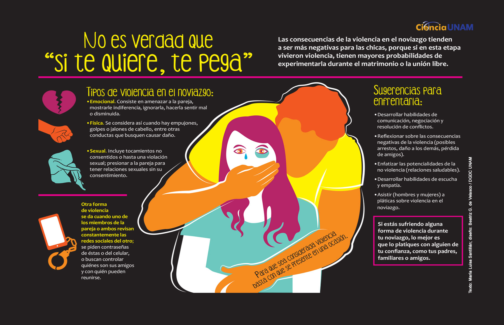

Plan de Emergencia
Es importante estar preparada para escapar con tus hijos/as si es necesario por razones de seguridad.
Siempre PIENSA EN:
- Preparar una Maleta con: pertenencias de primera necesidad, mudas de ropa para ti y tus hijos/as, artículos de aseo personal, juguetes o artículos especiales de tus hijos/as,
medicinas habituales, etc.
- En una caja o sobre aparte recopila y ten a la mano documentos personales importantes. Deja dichos documentos en el mismo lugar que la maleta o dentro de ella.
Documentos: tarjeta del plan médico, certificados de nacimiento y/o pasaporte, tarjetas de seguro social, certificado de matrimonio, registro del automóvil, dinero en efectivo,
recetas de medicinas, tarjetas de crédito o números de cuentas, expediente médico, recibos de pagos importantes, copias de llaves de la casa y del auto, documentos de los niños/as,
evidencia de maltratos recibidos, escritura de la propiedad, direcciones y números de teléfono, etc.
- Guarda la maleta y sobre con los documentos en casa de una vecina, familiar o amistad cercana.
- Considera la transportación y formas de salir de la casa. Piensa en cómo y con quien vas a salir de la casa; policía, taxis, transportación pública, auto de amistades
o familiares, etc. Decide de antemano a dónde vas a ir e infórmaselo a la persona que escogiste.
- Ten a la mano, en una libreta, los teléfonos importantes de tus médicos o los de tus hijos/as, Policía, albergues y oficinas de servicios para personas maltratadas,
amistades o familiares, personas que te apoyan, etc.
- Llama a la policía. Explica que estas en una situación de Violencia Doméstica, ofrece los detalles e información completa, Anota el Número de Placa y el nombre
del/la policía y/o personal que investigue tu caso, anota el Número de Querella y pide copia de esta, Solicita escolta de la policía y/o acude a la Sala de Investigaciones
del Tribunal más cercano a solicitar una orden de protección y sus medidas provisionales, ve a la oficina más cercana de Servicios Legales o a la de un abogado/a de tu confianza.
- Utiliza recursos de ayuda. Como: Si has sido Agredida, ve a una Sala de Emergencias, aunque tus golpes o heridas no sean visibles. Infórmale al personal médico que
estas en una situación de Violencia Doméstica. Pide una copia de tu expediente médico, esto te ayudara en caso de que decidas radicar cargos criminales al agresor/a.
- Consigue a alguien de confianza con quien puedas dejar a tus mascotas.
Referencia:
Coordinadora Paz para la Mujer. Recuperado de: www.pazparalamujer.org
¿Qué es la Violencia en el Noviazgo?
Se define como cualquier acto intencional de violencia física, psicológica o emocional de un miembro de la pareja contra el otro en una relación de noviazgo con el objeto
de controlar o dominar a la persona. Esta se puede manifestar a través de fuerza física, violencia psicológica, amenazas, violencia sexual, intimidación, persecución o aislamiento.
Señales Violencia
